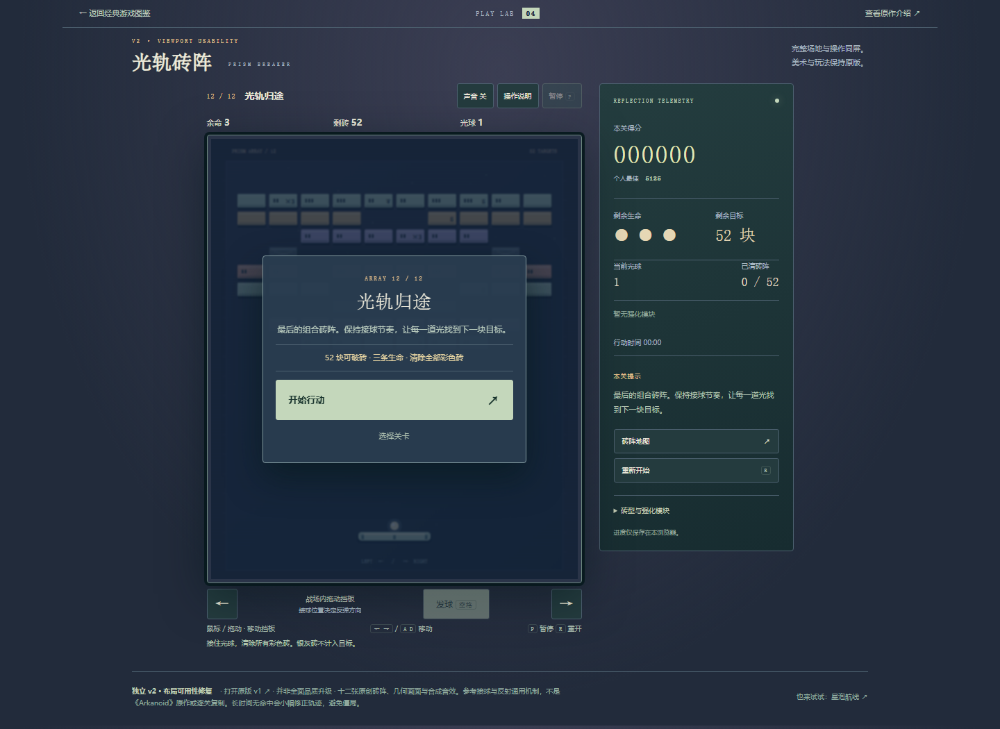
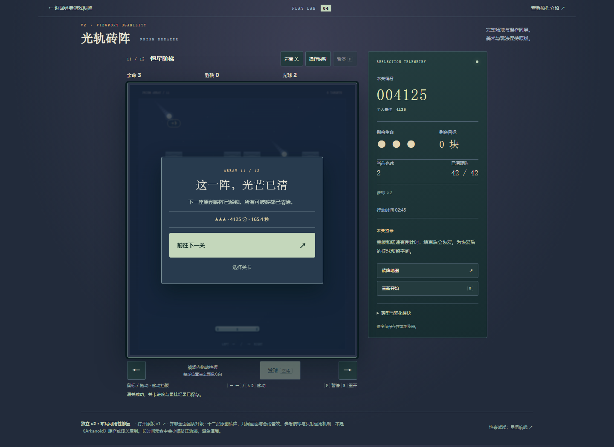
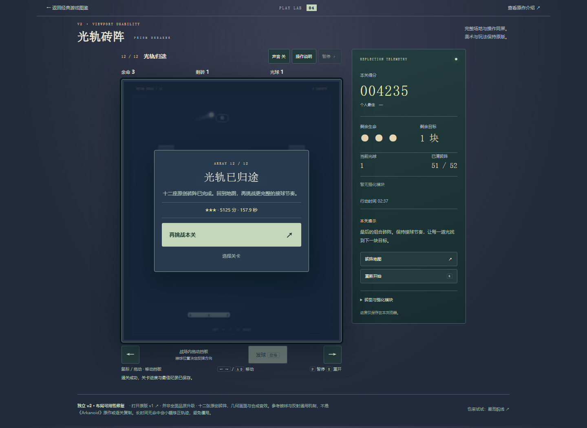
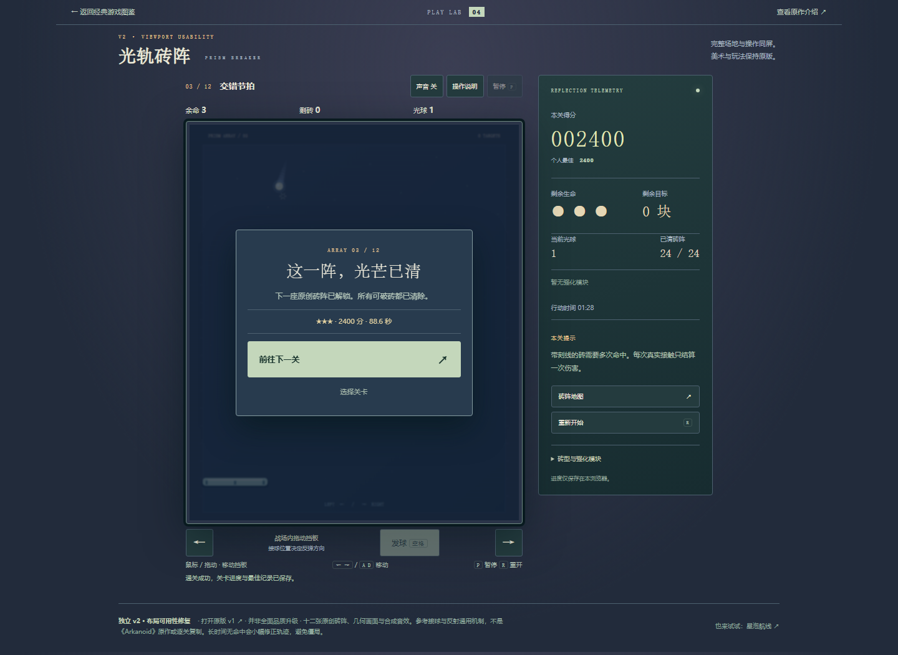
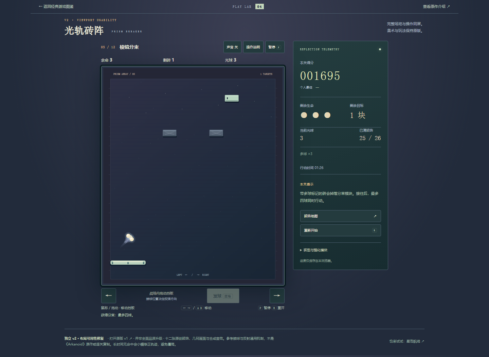

光轨砖阵 v2：第二关至十二关自然衔接与终局
完整方法与限制 · 实际普通UI记录 · 试玩
final-records-refresh-last-stage-ready
level-1-attempt-1-wonlevel-10-attempt-1-wonlevel-11-attempt-1-won
level-12-attempt-1-won
level-2-attempt-1-wonlevel-3-attempt-1-won
level-4-attempt-1-wonlevel-5-attempt-1-wonlevel-6-attempt-1-wonlevel-7-attempt-1-wonlevel-8-attempt-1-wonlevel-9-attempt-1-wonnative-multiball-during-campaign